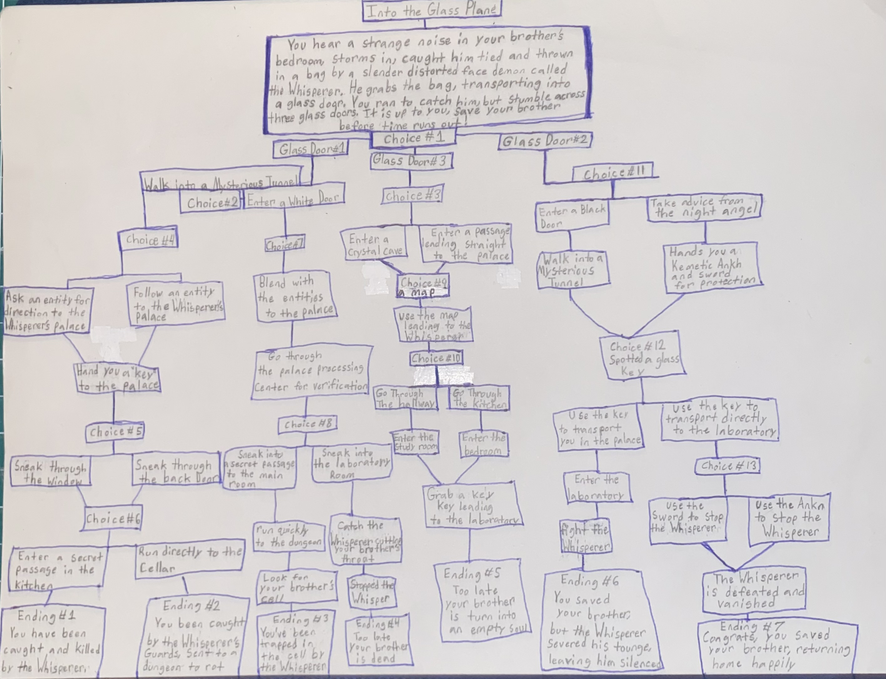
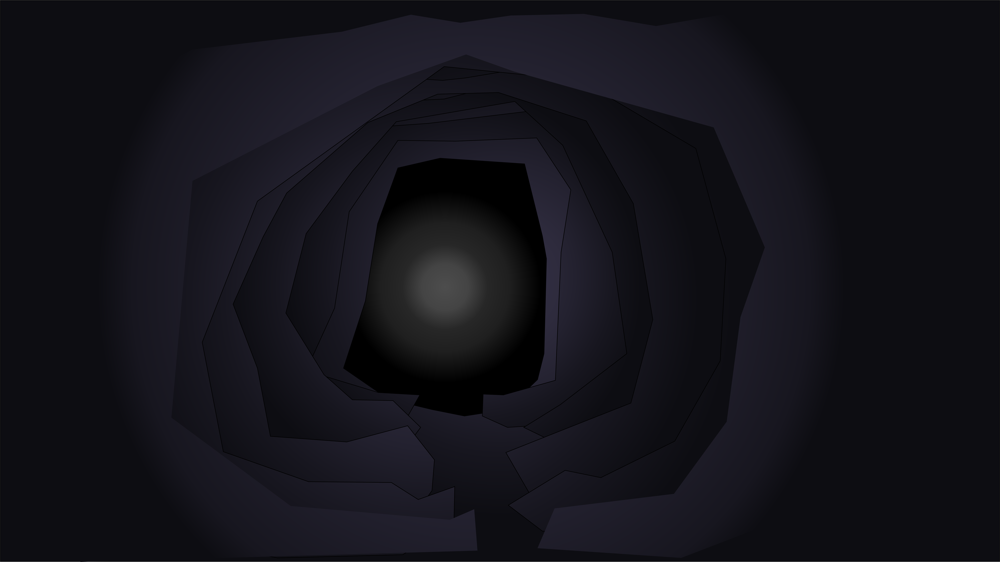

This interactive story centers around a character, whose brother is kidnapped by the nefarious demon called the Whisperer, transported into a glass door on the floor. The character gets stuck in a situation, finding three glass doors, but either one of the spiritual planes can lead to the path to save his or her brother from the hands of the Whisperer. The story follows the character strategizing on their decision through encountering dark spirits, taking advice from the benevolent Night Angel, finding paths to defeat the Whisperer before time runs out.
The user of the character will make decisions that will change the direction of the story. The directions can lead to strange and mysterious paths, while other directions can lead to extreme danger or safety. The story includes multiple paths to find the brother and at least two to save him from the Whisperer. The user’s decision on the different paths will shape the experience.
Here is the map of my story showing the various strategic paths and possible endings

This image represents one possible setting from my story
